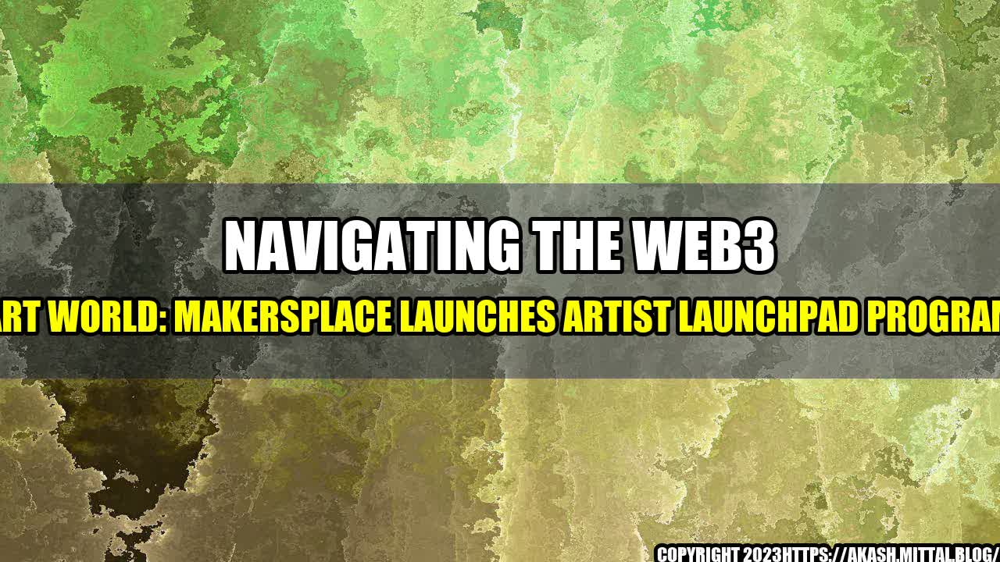

Navigating the Web3 Art World: MakersPlace Launches Artist Launchpad Program

An Exciting Opportunity for Artists Breaking into Web3
As a traditional artist, the world of Web3 and digital art can be overwhelming. But with MakersPlace's new Artist Launchpad Program, breaking into the world of NFTs and cryptocurrency has never been easier.
What is the Artist Launchpad Program?
MakersPlace's Artist Launchpad Program is designed to help artists successfully navigate the world of Web3. The program offers support, mentorship, and resources to artists looking to sell their NFTs on the MakersPlace marketplace.
Through the program, artists can learn about the technology behind cryptocurrency, how to create digital art, and how to market and sell their NFTs. They will also have access to a community of fellow artists and experts in the field who can offer advice and guidance.
How Can the Artist Launchpad Program Help You?
If you're a traditional artist looking to break into the world of NFTs and cryptocurrency, the Artist Launchpad Program can offer you a unique opportunity to learn new skills and expand your art practice.
By joining the program, you will have access to:
Expert mentorship: You will be paired with a mentor who can offer feedback, advice, and guidance as you navigate the world of Web3.
Exclusive resources: You will have access to exclusive resources, such as tutorials, webinars, and other educational materials to help you create, market, and sell your NFTs.
A supportive community: You will have the opportunity to connect with other artists and experts in the field, creating a supportive network to help you grow your art practice.
Increased exposure: By selling your NFTs on MakersPlace, you'll be able to reach a global audience of art collectors and enthusiasts.
A Success Story: The Launch of the Artist Launchpad Program
Since the launch of the Artist Launchpad Program, MakersPlace has seen an increase in the number of artists joining the platform and selling their NFTs. One artist who has had great success with the program is Robin Clarijs.
"The Artist Launchpad Program gave me the tools and knowledge I needed to successfully navigate the world of Web3 and sell my NFTs on the MakersPlace marketplace. The mentorship and resources were invaluable in helping me create digital art and market my work."
Robin's success is just one example of the many artists who have benefited from the Artist Launchpad Program. By providing artists with the support and resources they need to navigate the world of Web3, MakersPlace is helping to ensure the success of the next generation of digital artists.
Conclusion: Breaking into Web3 with MakersPlace
If you're a traditional artist looking to break into the world of Web3, MakersPlace's Artist Launchpad Program is an exciting opportunity to learn new skills, connect with a supportive community, and expand your art practice. By joining the program, you'll be able to successfully navigate the world of NFTs and cryptocurrency, and reach a global audience of art collectors and enthusiasts.
In summary, here are three key takeaways about the Artist Launchpad Program:
The program provides expert mentorship, exclusive resources, and a supportive community to help artists successfully navigate the world of Web3.
Artists who have participated in the program have seen increased success in selling their NFTs on the MakersPlace marketplace.
The program is a unique opportunity for traditional artists looking to break into the world of digital art and cryptocurrency.
Curated by Team Akash.Mittal.Blog
Share on Twitter Share on LinkedIn